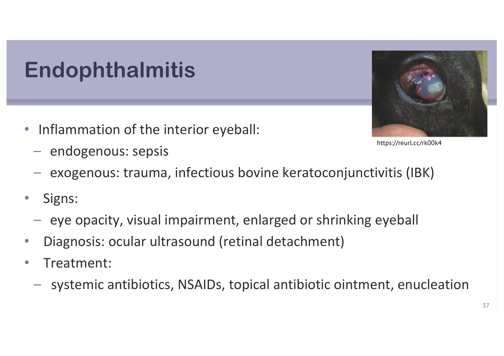
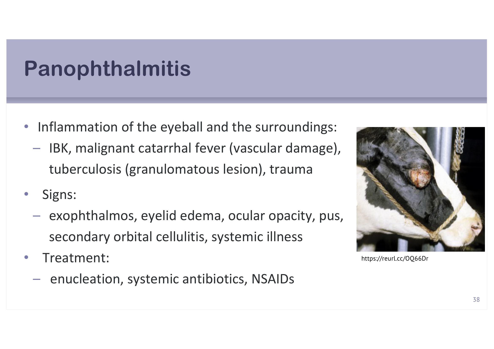
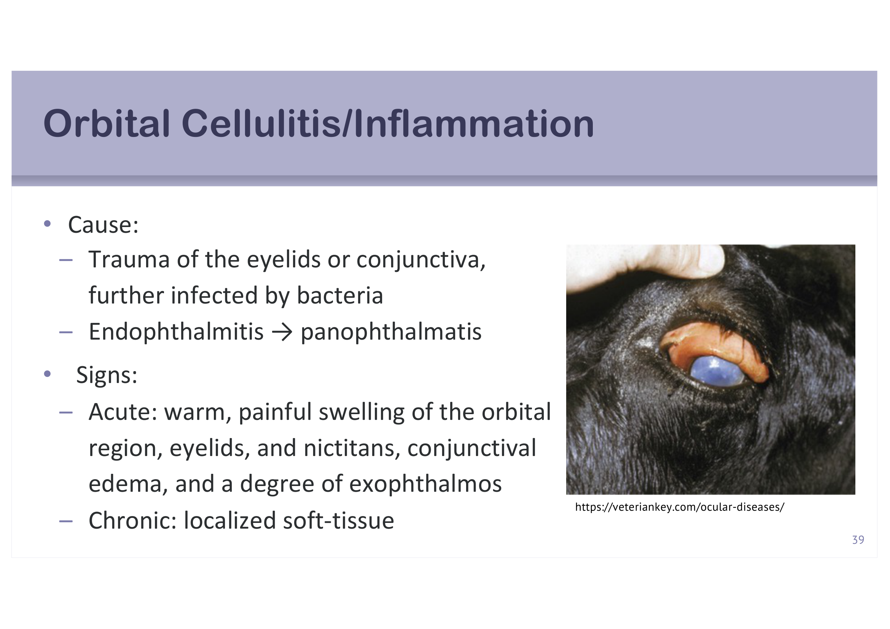
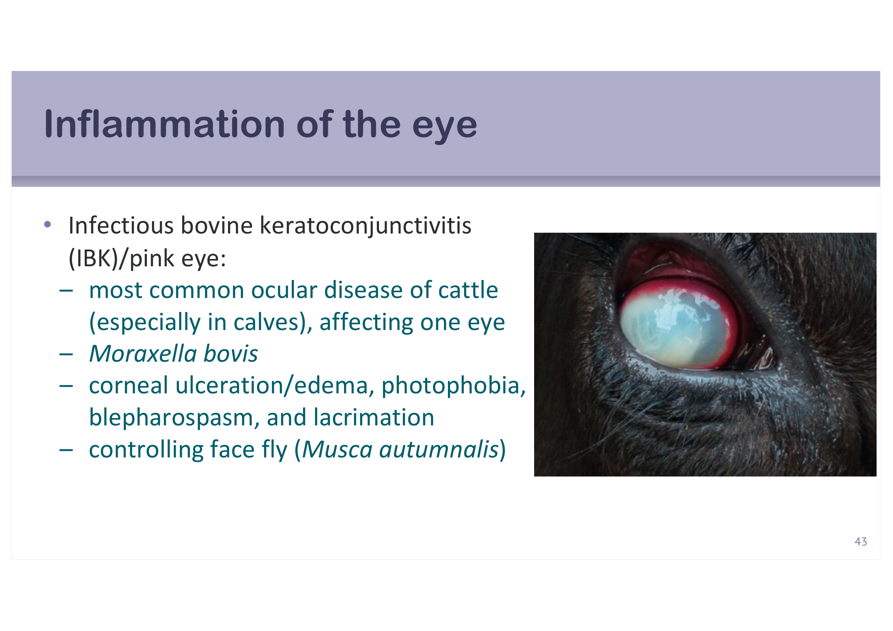
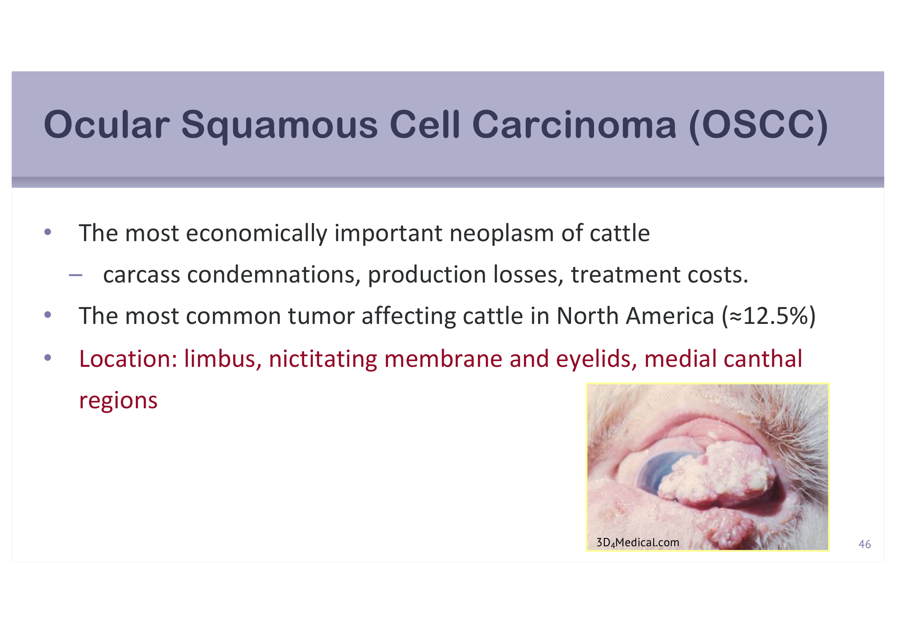
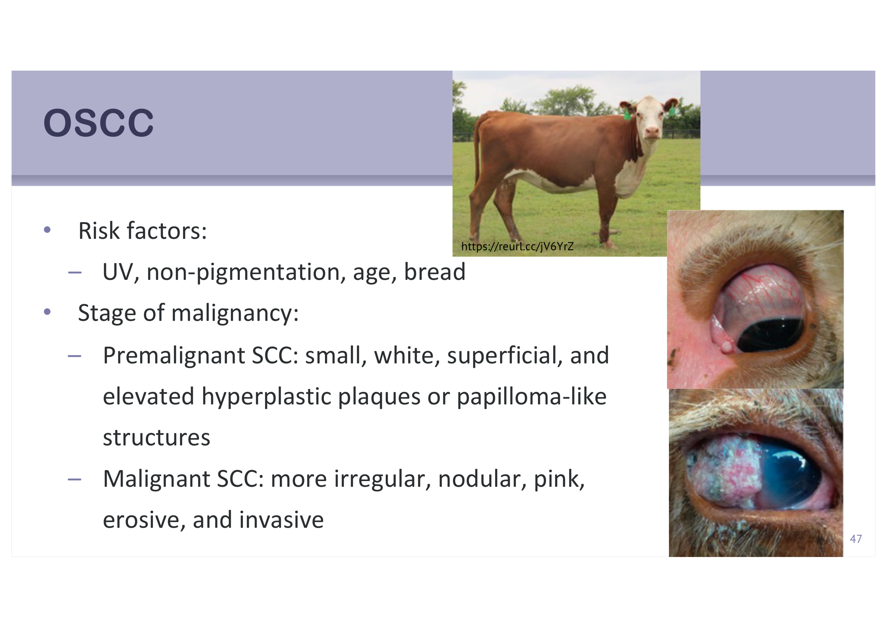
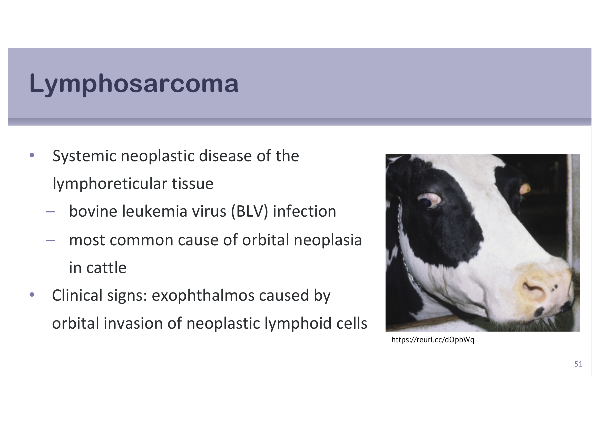

重點摘要
這頁整理反芻動物（主要是牛）最重要的眼科疾病，架構上分成兩大類：感染／發炎性疾病（眼內炎→全眼球炎→眼眶蜂窩織炎，這三個其實是同一種病理過程隨嚴重度遞升的連續光譜；再加上多種病原造成的角結膜炎，其中IBK／pink eye是牛最常見的眼科疾病）；以及腫瘤性疾病（OSCC是牛最重要的經濟性腫瘤，淋巴肉瘤則是牛眼眶腫瘤最常見病因）。這份講義大量依賴臨床照片——很多疾病光看文字描述很難分辨（例如「眼球混濁」到底混濁成什麼樣子），這頁把關鍵照片都放進來，讀的時候建議圖文對照。
適應症與徵象清單
推測國考高頻
牛最常見眼病，推測必考
推測國考高頻
※ 「推測國考熱點」是我依內容特性（疾病定義明確、有標誌性照片、經濟重要性高）做的個人判斷，沒有實際核對過歷屆考古題，僅供參考、不是驗證過的事實。
- 眼內炎→全眼球炎→眼眶蜂窩織炎是同一光譜的三個嚴重度：眼內炎（endophthalmitis）侷限在眼球內部；全眼球炎（panophthalmitis）擴及整個眼球與周圍組織；若再擴散到眼眶周邊軟組織，則稱眼眶蜂窩織炎（orbital cellulitis），三者的治療都以摘除眼球（enucleation）＋全身性抗生素＋NSAID為核心。
- IBK（infectious bovine keratoconjunctivitis／pink eye）是牛最常見的眼科疾病，好發於犢牛、通常單眼發生，病原是Moraxella bovis，典型徵象是角膜潰瘍／水腫、畏光、眼瞼痙攣、流淚，防治上要控制病媒蒼蠅（Musca autumnalis）。
- 山羊／綿羊的眼部感染要另外考慮Mycoplasma與Chlamydia：Mycoplasma感染常合併關節炎、乳房炎；Chlamydia pecorum感染則要留意合併流產。
- OSCC（ocular squamous cell carcinoma）是牛經濟重要性最高的腫瘤，好發部位是角膜緣、瞬膜與眼瞼、內眥區；危險因子是紫外線暴露、無色素沉澱（如Hereford白臉牛種）、年齡；癌前病變與惡性病變在外觀上有明確區別（白色扁平斑塊 vs. 不規則結節狀糜爛）。
- 淋巴肉瘤是牛眼眶腫瘤最常見的病因，源於牛白血病病毒（BLV）感染，是全身性疾病的局部表現（眼眶只是被侵犯的部位之一），確診後多數牛在6個月內死亡或安樂死，防治重點是撲滅BLV感染源而非治療眼睛本身。
眼科檢查適應症與眼病徵象
在進入個別疾病之前，先建立「什麼時候該做眼科檢查」與「眼病的徵象有哪些類別」這兩份checklist，這是後面每個疾病描述時共用的詞彙庫。
眼科檢查的適應症 Indications for Ophthalmic Examination
- 眼睛外觀異常（不對稱或顏色改變）
- 眼部分泌物
- 眼部疼痛
- 視力下降或失明
- 病患表現或行為改變
- 購前檢查（prepurchase examination）
- 已診斷眼科疾病的追蹤
- 遺傳性眼科疾病篩檢
眼病的徵象分類 Signs of Ocular Disease
| 分類 | 具體表現 |
|---|---|
| 眼球／眼周不對稱 | Ocular/periocular asymmetry |
| 眼球位置改變 | 突眼（exophthalmos）、眼球內陷（enophthalmos）、斜視（strabismus） |
| 眼球大小改變 | 小眼症（microphthalmia） |
| 眼瞼形態改變 | 內翻（entropion）、外翻（ectropion）、眼瞼炎（blepharitis）、結膜炎（conjunctivitis）、眼瞼下垂（ptosis） |
| 組織體積改變 | 腫瘤（neoplasms） |
| 顏色改變 | Change in color |
| 分泌物 | Discharge |
| 疼痛 | Pain |
| 失明 | Blindness |
眼科疾病的三大類別
眼球、眼瞼、眼眶
見下方章節
見下方章節
眼內炎與全眼球炎重要
這兩個疾病本質上是同一種病理過程的不同嚴重度——範圍從眼球內部逐漸擴大到整個眼球與周圍組織，放在一起比較記憶效率最高。
眼內炎 Endophthalmitis
眼球內部的發炎，病因分兩類：內因性（endogenous）——敗血症（sepsis）經血行擴散；外因性（exogenous）——創傷、感染性牛角結膜炎（IBK）續發。徵象：眼球混濁、視力障礙、眼球脹大或萎縮。診斷可用眼部超音波評估視網膜剝離（retinal detachment）。治療：全身性抗生素、NSAID、局部抗生素藥膏、摘除眼球（enucleation）。

全眼球炎 Panophthalmitis
整個眼球與周圍組織的發炎，病因包括IBK、惡性卡他熱（malignant catarrhal fever，血管損傷機轉）、結核病（tuberculosis，肉芽腫性病灶）、創傷。徵象：突眼、眼瞼水腫、眼球混濁、化膿、續發眼眶蜂窩織炎、全身性病徵。治療：摘除眼球、全身性抗生素、NSAID。

眼內炎與全眼球炎的鑑別關鍵在於病變範圍：眼內炎侷限在眼球內部（角膜、前房、玻璃體等），眼球外觀輪廓仍可能維持；全眼球炎則已擴及眼球壁與周圍組織，常合併明顯的突眼、眼瞼水腫與全身性病徵。眼內炎若未妥善處理，可能進展為全眼球炎，再進一步擴散則成為下一節的眼眶蜂窩織炎。
眼眶蜂窩織炎 Orbital Cellulitis/Inflammation
這是感染／發炎光譜的最外圍——病變已經擴散到眼眶周邊的軟組織。
病因
- 眼瞼或結膜創傷，續發細菌感染
- 眼內炎→全眼球炎的病程延續與擴散
徵象：急性 vs. 慢性
| 病程 | 臨床徵象 |
|---|---|
| 急性 Acute | 眼眶區域溫熱、疼痛、腫脹，眼瞼與瞬膜受累，結膜水腫，合併不同程度的突眼 |
| 慢性 Chronic | 局部軟組織化（localized soft-tissue） |

診斷與治療
診斷：CBC（血球計數）通常正常或僅輕度嗜中性球增多；鑑別診斷需考慮腫瘤、慢性額竇炎（chronic frontal sinusitis）。治療：急性期給予全身性廣效抗生素、NSAID、局部抗生素藥膏或潤滑劑，並可搭配眼眶溫敷（每次5分鐘，一日三次）；慢性期則需要外科引流，並合併上述急性期治療。
感染性角結膜炎與其他傳染病重要
這節分兩部分：山羊／綿羊常見的兩種病原、以及牛最重要的IBK（附帶列出其他會造成眼部徵象的傳染病清單）。
山羊與綿羊：Mycoplasma與Chlamydia感染
| 病原 | 傳播方式 | 其他臨床徵象 |
|---|---|---|
| Mycoplasma （M. conjunctivae、M. mycoides、M. agalactiae、M. arginini、Acholeplasma oculusi等） | 直接接觸、病媒傳播 | 關節炎、乳房炎 |
| Chlamydia pecorum | 直接接觸 | 流產 |
感染性牛角結膜炎 IBK／Pink Eye重要
牛最常見的眼科疾病，尤其好發於犢牛，通常只侵犯單眼。病原是Moraxella bovis。典型徵象：角膜潰瘍／水腫、畏光（photophobia）、眼瞼痙攣（blepharospasm）、流淚（lacrimation）。防治重點是控制病媒顏面蠅（Musca autumnalis）的傳播。

其他會造成眼部徵象的傳染病（清單）
講義以條列方式提及下列疾病可能合併眼部病徵，但未逐一展開詳細機轉，這裡列出病名供辨識，詳細病原學與防治留待各該疾病的專題課程：
感染性牛鼻氣管炎
IBR（牛皰疹病毒第一型）
惡性卡他熱
Malignant catarrhal fever
牛病毒性下痢
BVD
藍舌病
Bluetongue
牛白血病病毒
BLV
小反芻獸疫
PPR
羊搔癢症
Scrapie
李斯特菌病
Listeria monocytogenes
結核病
Mycobacterium bovis
傳染性血栓栓塞性腦膜腦炎
ITEME（Histophilus somni）
鉤端螺旋體病
Leptospirosis
眼部腫瘤：OSCC與淋巴肉瘤重要
眼部與周圍組織有多種原發與續發腫瘤，但臨床最常抱怨的是組織變形與功能喪失；治療策略可從緩解症狀（摘除眼球）到根除問題（淘汰），良性/惡性、侷限/全身性的分類是選擇治療方式的重要依據。這節聚焦牛隻兩種最重要的眼部腫瘤。
牛眼部鱗狀細胞癌 Ocular Squamous Cell Carcinoma (OSCC)重要
牛經濟重要性最高的腫瘤——造成屠體廢棄、生產損失、治療成本；在北美是牛隻最常見的腫瘤之一（約佔12.5%）。好發位置：角膜緣（limbus）、瞬膜與眼瞼、內眥區（medial canthal region）。

危險因子與惡性度分期
危險因子：紫外線暴露、無色素沉澱（眼周皮膚未著色，如Hereford等白臉牛種風險較高）、年齡、品種。
| 分期 | 外觀特徵 |
|---|---|
| 癌前病變 Premalignant SCC | 小、白色、表淺、隆起的增生性斑塊或乳突瘤樣（papilloma-like）結構 |
| 惡性病變 Malignant SCC | 形狀更不規則、結節狀、粉紅色、糜爛、侵襲性生長 |

侵襲、病理與治療
- 侵襲／轉移：瞬膜腫瘤容易侵犯瞬膜基部與軟骨；可侵犯眼球、結膜、眼眶、眼眶骨、鼻竇與局部淋巴結；（罕見）轉移至胸腔／腹腔臟器
- 病理：良性——表層無核、角質化的鱗狀細胞與深層細胞核增大、染色質粗糙的上皮細胞，基底膜未受侵犯；惡性——多形性細胞、大而深染的細胞核與明顯核仁，可見穿越基底膜的侵犯，常見角質珠（keratin-pearl）形成或細胞間橋
- 治療：外科切除（局部切除、摘除眼球enucleation、眼眶內容物摘除exenteration）、冷凍治療（病灶<0.5cm）、射頻熱療（radiofrequency hyperthermia）；復發率介於30.4%–42.4%
淋巴肉瘤 Lymphosarcoma
淋巴網狀組織的全身性腫瘤性疾病，病因為牛白血病病毒（bovine leukemia virus, BLV）感染，是牛隻眼眶腫瘤最常見的病因。臨床徵象：腫瘤性淋巴細胞侵犯眼眶造成的突眼（exophthalmos）。

治療：摘除眼球，但這只是緩解局部症狀，無法治療根本的全身性疾病。預後極差：多數確診眼眶淋巴肉瘤的牛隻在診斷後6個月內死亡或遭安樂死。防治重點不在治療個別病患的眼睛，而在撲滅牛群中的BLV感染源（BLV為血液傳播疾病）——這是與OSCC治療思維最大的不同：OSCC是局部病灶可以外科處理，淋巴肉瘤的眼眶病灶只是全身性疾病的冰山一角。
雙語詞彙表 Bilingual Glossary
正文中第一次出現時都已經中英並列，這裡集中整理一份，方便考前只看英文名詞、測試自己記不記得對應的中文概念（反過來也可以）。
| 中文 | English | 一句話說明 |
|---|---|---|
| 突眼 | Exophthalmos | 眼球向外突出，見於全眼球炎、眼眶蜂窩織炎、淋巴肉瘤 |
| 眼球內陷 | Enophthalmos | 眼球位置改變的一種 |
| 斜視 | Strabismus | 眼球位置改變的一種 |
| 小眼症 | Microphthalmia | 眼球大小改變 |
| 眼瞼內翻／外翻 | Entropion / Ectropion | 眼瞼形態改變 |
| 眼內炎 | Endophthalmitis | 眼球內部發炎，內因（敗血症）或外因（創傷、IBK） |
| 全眼球炎 | Panophthalmitis | 整個眼球與周圍組織發炎，較眼內炎範圍更廣 |
| 眼眶蜂窩織炎 | Orbital Cellulitis | 感染擴散到眼眶周邊軟組織，分急性慢性 |
| 摘除眼球 | Enucleation | 眼內炎/全眼球炎/眼眶蜂窩織炎/腫瘤的共同治療選項 |
| 感染性牛角結膜炎／紅眼病 | Infectious Bovine Keratoconjunctivitis (IBK) / Pink Eye | 牛最常見眼科疾病，病原Moraxella bovis |
| 畏光 | Photophobia | IBK典型徵象之一 |
| 眼瞼痙攣 | Blepharospasm | IBK典型徵象之一 |
| 顏面蠅 | Face fly (Musca autumnalis) | IBK的病媒昆蟲，防治重點之一 |
| 牛眼部鱗狀細胞癌 | Ocular Squamous Cell Carcinoma (OSCC) | 牛經濟重要性最高的腫瘤，好發角膜緣/瞬膜/眼瞼 |
| 角膜緣 | Limbus | OSCC好發位置之一 |
| 瞬膜 | Nictitating membrane | OSCC好發位置之一，腫瘤易侵犯其基部與軟骨 |
| 眼眶內容物摘除術 | Exenteration | 比enucleation範圍更大的外科切除方式 |
| 淋巴肉瘤 | Lymphosarcoma | 牛眼眶腫瘤最常見病因，源於BLV感染的全身性疾病 |
| 牛白血病病毒 | Bovine Leukemia Virus (BLV) | 淋巴肉瘤病因，血液傳播 |
學習重點整理
考前快速掃過，標重要的三節是我推測這頁的國考主戰場。
練習題 Practice Quiz
涵蓋感染/發炎光譜、IBK、OSCC、淋巴肉瘤各章節重點，最後一題為臨床情境整合題，先自己作答再點「顯示答案」核對。
感染性牛角結膜炎（IBK／pink eye）是牛最常見的眼科疾病，好發犢牛、通常單眼，病原為Moraxella bovis，典型徵象正是角膜潰瘍/水腫、畏光、眼瞼痙攣、流淚。
眼內炎侷限在眼球內部結構（如角膜、前房、玻璃體）；全眼球炎則已擴及眼球壁與周圍組織，常合併突眼、眼瞼水腫與全身性病徵，若再擴散到眼眶周邊軟組織則稱為眼眶蜂窩織炎。三者是同一病理過程隨嚴重度遞升的連續光譜。
「牛隻眼眶腫瘤最常見的病因，源於BLV感染」描述的是淋巴肉瘤，不是OSCC。OSCC的危險因子是紫外線暴露、無色素沉澱、年齡、品種，與BLV感染無關。(A)(B)(C)皆為OSCC的正確敘述。
OSCC本質上是一個從眼部局部組織（角膜緣、瞬膜、眼瞼等上皮）發生、逐漸侵襲周圍組織的原發性腫瘤，只要在腫瘤尚未廣泛轉移前，透過外科切除、摘除眼球甚至眼眶內容物摘除等局部治療手段，有機會根除病灶、控制疾病。淋巴肉瘤則完全不同——它是牛白血病病毒（BLV）感染所引起的全身性淋巴網狀組織腫瘤性疾病，眼眶的腫瘤性淋巴細胞浸潤只是這個全身性疾病在眼部的其中一個表現，全身其他部位（淋巴結、其他器官）很可能也已經受到侵犯。因此即使摘除眼球移除了眼眶的局部病灶，並沒有處理到疾病真正的根源，這也是為什麼多數確診眼眶淋巴肉瘤的牛隻在6個月內仍會死亡或遭安樂死，防治的重點必須放在撲滅牛群中的BLV感染源，而不是治療個別患病眼睛。
(1) 最可能診斷：牛眼部鱗狀細胞癌（OSCC）。依據：病灶位置在角膜緣（OSCC經典好發部位）；品種為Hereford（白臉、眼周無色素沉澱，OSCC高風險品種）；長期戶外放牧、日照充足（UV暴露為危險因子）；年齡8歲（年齡也是危險因子之一）。
(2) 病程階段：屬於惡性病變（malignant SCC）階段。依據講義描述，惡性SCC的外觀特徵正是「更不規則、結節狀、粉紅色、糜爛、侵襲性」，且此病例觸診質地偏硬並已侵犯部分角膜，符合惡性期的侵襲性生長表現；相對地，癌前病變（premalignant SCC）應呈現小、白色、表淺、隆起的扁平斑塊或乳突瘤樣外觀，與此病例明顯不同。
(3) 治療選項：由於病灶已進入惡性、侵襲性階段且範圍涉及角膜，外科治療選項包括局部切除、摘除眼球（enucleation），若侵犯範圍更廣則可能需要眼眶內容物摘除術（exenteration）；冷凍治療僅適用於小於0.5cm的病灶，此病例病灶已有侵犯性生長，可能不是理想選擇；射頻熱療也是可考慮的選項之一。無論選擇何種治療方式，都應告知牧場主OSCC的復發率介於30.4%至42.4%之間，術後仍需要持續追蹤。